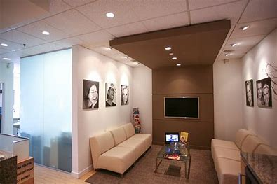

Our facilities

reception desk

Examination Room

Minimalist biomimetic dentistry today
A healthier tomorrow.
At Pearl & smiles , we believe in preserving as much of the natural tooth as possible.
Biomimetic dentistry is a new, more natural approach that maximizes adhesive techniques to minimize
aggressive intervention.
Using the latest advances in chemistry, biomaterials, and 3D technology,
we can practice a better way of dentistry that extends your teeth’s lifespan, saves you money, and reduces the
need for future crowns, endodontic therapy, and extractions.
Our expertise is in cosmetic dentistry and taking an artistic approach to your smile. Before we even think about working on your teeth we will fully assess your smile from every angle and how it sits with all your f acial features. We will then discuss with you your needs and concerns and what you want from your smile before explaining all the treatment options available to you. Communication is the key to successful cosmetic dental results and our reputation is within your smile.
The Clinic uses the highest quality dental materials. We also employ the best dental technicians to ensure that your dental work is flawless and fabricated to your exact requirements. In addition to cosmetic dentistry we also offer high quality general dentistry to look after all your general dental needs as well as round the clock emergency treatment in Colombo.
To offer our services in a caring,relaxing and clean manner To provide a quality service at an affordable price. To use the latest prevention techniques so that there is minimal intervention or destruction of sound dental tissues. We sincerely believe – prevention is better than cure. To work with you to improve your smile so that you feel more confident and more importantly your regular dental care ensures that you have the added confidence of fresh breath..